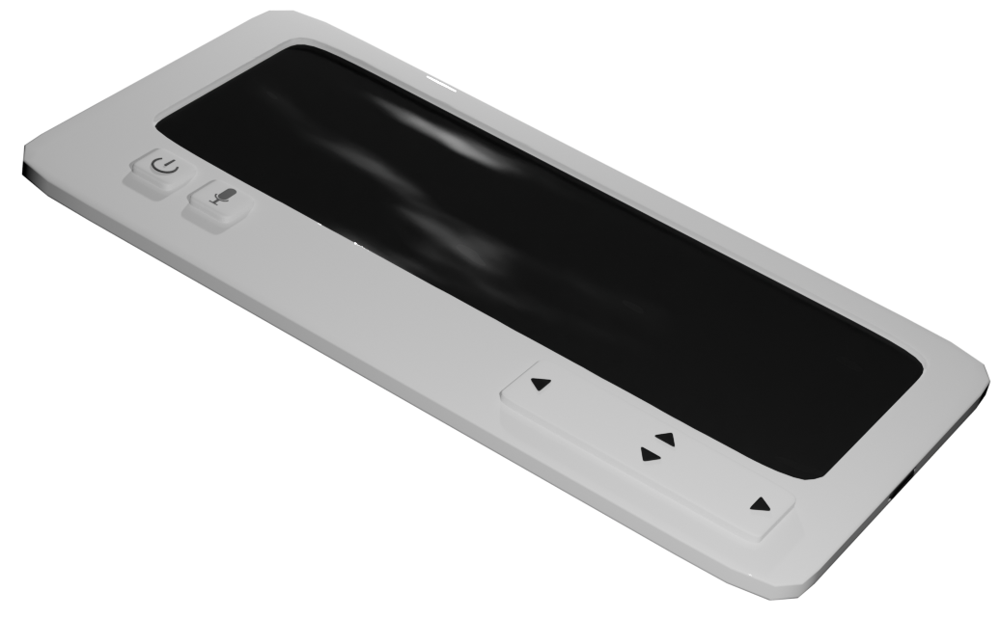

Apollo
นวัตกรรมเพจเจอร์นั้นสร้างมาเพื่อแก้ไขปัญหาเรื่องการได้ยินในกลุ่มผู้สูงอายุซึ่งกำลังอยู่ใยขั้นตอนพัฒนาอยู่
เนื่องด้วยเพจเจอร์ในยุคอดีตนั้นมีฟังก์ชันที่ไม่หลากหลายและผู้สูงอายุไม่ชำนาญในการใช้โทรศัพท์ เราจึงสร้างนวัตกรรม เพจเจอร์ขึ้นมาให้มีลักษณะและเนื้อหาคล้ายคลึงกับโทรศัพท์แต่สำหรับผู้สูงอายุ
เครื่องเพจเจอร์มีองค์ประกอบในการประกอบที่หาได้ง่าย ตัวอย่างประกอบเช่น หน้าจอ Liquid Crystal Display (LCD), microcontroller, และ microphone ขนาดย่อย เป็นต้น
องค์ประกอบคร่าวประกอบด้วย:
เนื่องจากเพจเจอร์ไม่ได้มีจุดประสงค์เพื่อที่จะแทนที่โทรศัพท์ แต่มีหน้าที่เพื่ออำนวยความสะดวกฟังก์ชันเบสิกต่าง ๆ ฉะนั้นฟังก์ชันจึงมีอยู่ไม่หลากหลาย แต่สามารถแก้ปัญหาได้ตรงจุด
แปลภาษา
แจ้งเตือน
หาตำแหน่ง